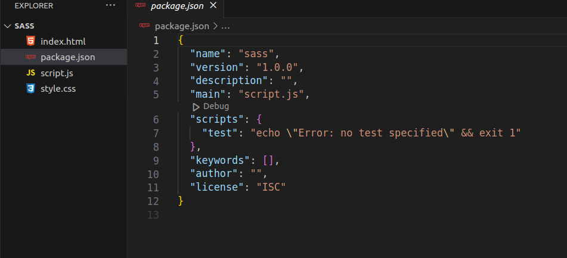
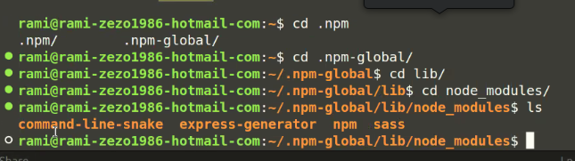
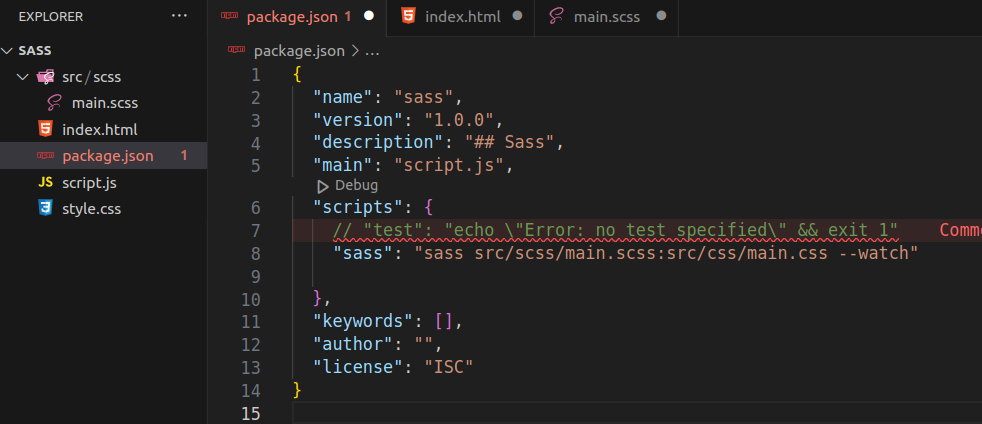
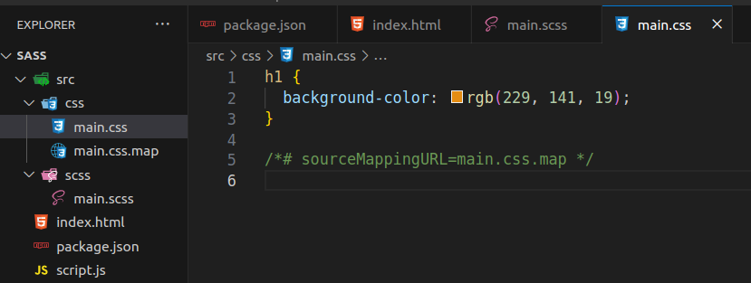
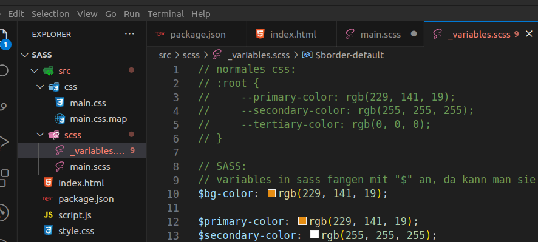
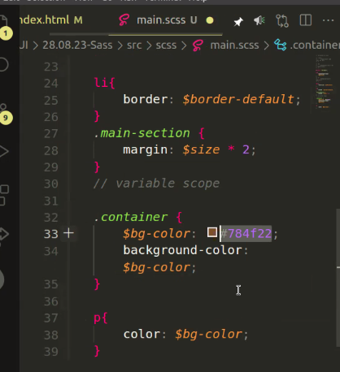
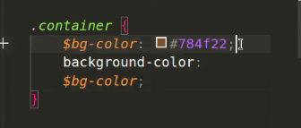
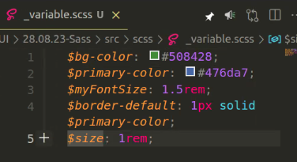

npm i -g sass
# sass global installieren
npm init -y
# node_modules initialisieren
sollte ergeben:

"scripts": {
"test": "echo \"Error: no test specified\" && exit 1"
},
# customize: automatisiert scripte ablaufen lassen.
npm i sass
# dann sieht man node_modules im project folder
zeigt, wo die global modules installiert sind.

mkdir src && mkdir src/scss && cd src/scss
touch main.scss

"scripts": {
// "test": "echo \"Error: no test specified\" && exit 1"
"sass": "sass src/scss/main.scss:src/css/main.css --watch"
},
<link rel="stylesheet" href="./src/css/main.css" />
npm run sass
# sass beenden mit ^C (= CTRL + C)

Beispiel:
/* normales css:*/
:root {
--primary-color: rgb(229, 141, 19);
--secondary-color: rgb(255, 255, 255);
--tertiary-color: rgb(0, 0, 0);
}
/* SASS:
variables in sass fangen mit "$" an, da kann man sie definieren */
$bg-color: rgb(229, 141, 19);
$primary-color: rgb(229, 141, 19);
$secondary-color: rgb(255, 255, 255);
$tertiary-color: rgb(0, 0, 0);
/* Definieren in _variables.scss
dann
_variables.scss importieren in main.scss: */
@import "variables";



